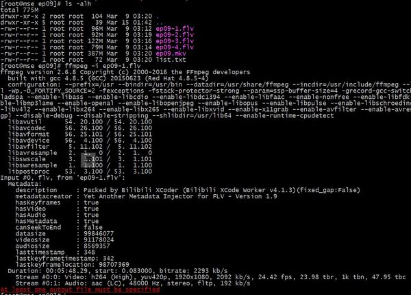
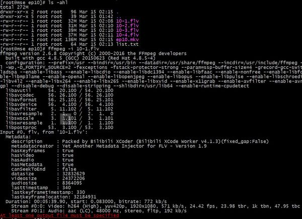

2018-04-29 15:50:34
看过 环太平洋：雷霆再起 / Pacific Rim: Uprising
2018-04-28 18:08:06
分享
卧槽，好帅
2018-04-28 17:58:41
看过 勇敢者游戏：决战丛林 / Jumanji: Welcome to the Jungle
2018-04-28 15:27:29
看过 恋爱的温度 / 연애의 온도
2018-04-22 23:24:15
看过 无问西东
2018-04-22 22:50:39
想看 内在美 / 뷰티 인사이드
2018-04-22 22:31:05
想看 恋爱的温度 / 연애의 온도
2018-04-22 08:21:10
想看 全境封锁 / The Division
2018-04-21 19:11:52
想看 雏菊 / 데이지
2018-04-18 18:15:20
想看
2018-04-18 18:15:02
想看
2018-04-17 18:52:53
想看 诺丁山 / Notting Hill
听歌圈粉
2018-04-16 22:05:31
想看
2018-04-16 22:04:54
想看
2018-04-16 22:04:41
想看 白头神探 / The Naked Gun: From the Files of Police Squad!
2018-04-16 22:03:24
想看
2018-04-16 22:03:16
想看
2018-04-15 10:34:15
看过 云图 / Cloud Atlas
2018-04-14 10:23:59
想看 水牛城66 / Buffalo ‘66
2018-04-10 17:46:58
听过 VIOLET EVERGARDEN : Automemories
2018-04-09 12:42:14
玩过 颂歌 Ode
2018-04-05 21:01:43
看过 紫罗兰永恒花园 / ヴァイオレット・エヴァーガーデン
2018-04-05 12:22:42
想看 全金属狂潮 / フルメタル・パニック!
2018-04-04 20:37:30
看过 芳华
2018-04-01 15:40:48
玩过 战神3 重制版 God of War III Remastered
2018-04-01 11:31:38
看过 无人机战场 / Battle Drone
2018-03-31 19:09:01
看过 浪矢解忧杂货店 / ナミヤ雑貨店の奇蹟
2018-03-31 11:01:37
想看 犬之岛 / Isle of Dogs
2018-03-30 11:20:46
玩过 蓝色警戒 State of War
2018-03-30 09:43:54
看过 绣春刀II：修罗战场
2018-03-29 21:52:48
在玩 死亡细胞 Dead Cells
虽然手残，但是这游戏设定还是很有意思的
2018-03-29 21:50:46
玩过 盐与避难所 Salt and Sanctuary
2018-03-29 18:54:43
想看 人间世 第一季
2018-03-29 18:49:39
转发了《
写得太好了，太久没有看到共鸣了
2018-03-29 18:48:26
2018-03-25 18:43:34
看过 妖猫传
2018-03-24 08:34:11
想看 碧海蓝天 / Le grand bleu
2018-03-23 17:51:35
看过 唐人街探案
2018-03-15 14:19:22
写了《
是这样的，每次我都喜欢下载下来看（初期收藏用），这次下下来发现容量变成了一半，我还特意检查了一下视频播放设置什么的，结果确实是变小了（编码还是H264）：
第九集：
第十集：
感觉对我这样的小水管用户…


2018-03-12 18:13:46
想看 深夜食堂
2018-03-12 08:56:13
想看 昆虫总动员2——来自远方的后援军 / Minuscule 2 - Les mandibules du bout du monde
2018-03-12 08:51:27
想看 昆虫总动员 / Minuscule: la Vallée des Fourmis Perdues
2018-03-12 08:47:58
想看 碟中谍6：全面瓦解 / Mission: Impossible - Fallout
2018-03-05 18:43:57
想看 豪勇七蛟龙 / The Magnificent Seven
被片头曲《七侠荡寇》圈粉了！！！
2018-03-05 18:20:06
想看 水形物语 / The Shape of Water
2018-03-05 18:19:49
想看 逃出绝命镇 / Get Out
2018-03-04 21:53:08
2018-03-04 21:53:06
2018-03-04 19:42:40
想玩 刀剑神域：夺命凶弹 ソードアート・オンライン フェイタル・バレット
2018-03-04 19:41:08
想看 头号玩家 / Ready Player One
看起来有点意思
2018-03-02 18:36:24
看过 香水 / Perfume: The Story of a Murderer
2018-03-01 16:44:33
在玩 发现之旅：古埃及 Discovery Tour by Assassin’s Creed: Ancient Egypt
考完naati开玩！
2018-02-28 18:28:28
想看 相对宇宙 第一季 / Counterpart Season 1
2018-02-28 17:30:17
想玩 魔法使之夜 魔法使いの夜
2018-02-25 17:25:01
想看 唐人街探案
据说更好看
2018-02-25 06:43:35
玩过 神秘海域3：德雷克的诡计 Uncharted 3: Drake’s Deception
2018-02-24 14:08:31
看过 唐人街探案2
好看！好久没看到这么搞笑的喜剧了！
2018-02-22 20:03:43
玩过 奇异人生：暴风前夕 Life is Strange: Before The Storm
2018-02-19 21:04:36
想玩 奇异人生2 Life is Strange 2
没有MAX的奇异人生不是人生
2018-02-16 18:51:19
玩过 尼尔 人工生命 NieR Replicant
2018-02-14 20:01:47
读过 IntelliJ IDEA Essentials
2018-02-14 19:18:15
说：
当我没说，降了版本之后bootstrap jdk版本太高也编译不了，还是继续用高版本吧
2018-02-14 19:00:44
说：
orz 看的jvm书已经过时了，心好累，很多模块被移除了，我还是降一下版本吧
2018-02-12 15:14:09
玩过 尼尔 完全形态 NieR Gestalt
还不错，英文配音有点出戏，然后画面有点说不上来的怪。 //正在视频通关，然后玩去年预购但是一直没玩的nier automata =。= 屯游戏不玩是罪过啊：NIER - The Movie [All Cutscenes_Endings in 1080P]-fishmFc5N…
2018-02-11 11:55:38
想玩 超凡双生 Beyond: Two Souls
2018-02-11 11:52:38
想玩 尼尔 人工生命 NieR Replicant
搞了半天原来我看的游戏视频是NieR Gestalt的 =。= 这个交给youtube-dl挂机去了，回头看
2018-02-11 11:45:47
在玩 尼尔 完全形态 NieR Gestalt
正在视频通关，然后玩去年预购但是一直没玩的nier automata =。= 屯游戏不玩是罪过啊：NIER - The Movie [All Cutscenes_Endings in 1080P]-fishmFc5Ntk.mkv
2018-02-11 06:52:40
玩过 正当防卫3 Just Cause 3
2018-02-10 18:05:16
在读 深入理解Java虚拟机（第2版）
2018-02-07 21:51:00
想看 无问西东
被安利了
2018-02-07 18:27:46
想看 移魂都市 / Dark City
2018-02-07 18:25:57
想看 银翼杀手2049 / Blade Runner 2049
2018-02-06 16:15:35
看过 小林家的龙女仆 / 小林さんちのメイドラゴン
2018-02-06 16:12:18
看过 硅谷 第四季 / Silicon Valley Season 4
2018-02-05 20:23:03
想看 硅谷 第五季 / Silicon Valley Season 5
2018-02-04 08:42:18
看过 血族 第四季 / The Strain Season 4
2018-02-03 22:37:37
在看 血族 第四季 / The Strain Season 4
这一集如果熊孩子能拯救世界，我就相信他是隐藏的真正主角
2018-02-02 21:32:39
看过 十二宫 / Zodiac
2018-02-01 19:29:06
想玩 古剑奇谭三：梦付千秋星垂野
能预购的时候就steam预购
2018-01-28 19:22:33
想看 金蝉脱壳2：冥府 / Escape Plan 2: Hades
赞赞赞！
2018-01-26 11:43:08
玩过 神舞幻想
2018-01-26 08:52:36
在玩 神舞幻想
2018-01-26 07:43:05
想玩 德军总部2：新巨像 Wolfenstein II: The New Colossus
久仰大名
2018-01-26 07:39:53
想玩 巫师3：狂猎 The Witcher 3: Wild Hunt
竟然忘了mark这个
2018-01-26 07:37:18
玩过 率土之滨
2018-01-26 07:36:01
玩过 刺客信条：起源 Assassin’s Creed Origins
2018-01-26 07:23:23
想看 勇敢者游戏：决战丛林 / Jumanji: Welcome to the Jungle
2018-01-20 21:20:10
想看 虎啸龙吟
被王洛勇老师圈粉，一定要看！
2018-01-17 06:49:53
在玩 率土之滨
这不就是抄部落冲突的吗 =。=
2018-01-14 11:53:36
看过 星河战队 / Starship Troopers
2018-01-13 19:33:48
看过 黑镜 第四季 / Black Mirror Season 4
2018-01-11 19:33:02
在看 黑镜 第四季 / Black Mirror Season 4
ok 那就看第四季
2018-01-11 19:32:19
看过 黑镜 第三季 / Black Mirror Season 3
2018-01-11 15:02:40
想看 三块广告牌 / Three Billboards Outside Ebbing, Missouri
分这么高，我很好奇
2018-01-11 11:50:44
在看 紫罗兰永恒花园 / ヴァイオレット・エヴァーガーデン
2018-01-11 08:08:47
在看 紫罗兰永恒花园 / ヴァイオレット・エヴァーガーデン
2018-01-09 14:17:13
玩过 神秘海域2：纵横四海 Uncharted 2: Among Thieves
2018-01-08 22:08:18
看过 飞屋环游记 / Up
2018-01-08 08:20:04
玩过 恋与制作人
哦，是给女生玩的啊，尴尬了
2018-01-05 22:40:29
在玩 尼尔 人工生命 NieR Replicant
没有三公主，依然是准备视频通关然后玩去年预购但是一直没玩的nier automata =。= 屯游戏不玩是罪过啊：NIER - The Movie [All Cutscenes_Endings in 1080P]-fishmFc5Ntk.mkv
2018-01-05 22:37:22
读过 新华字典
2018-01-05 22:32:41
玩过 模拟人生4 The Sims 4
2018-01-05 16:18:02
看过 迷失 第六季 / Lost Season 6
看了最后一集的最后10分钟，感觉还是不错的吧，但是，今天，我还是浮躁了，若有机会，我会补上
2018-01-05 16:09:18
看过 迷失 第三季 / Lost Season 3
2018-01-04 09:19:51
想看 烟花 / 打ち上げ花火、下から見るか？横から見るか？
日常想看
2018-01-03 22:30:21
想看 黑镜 第四季 / Black Mirror Season 4
都不知道出来了，看来第三季说好的后6集烂尾了
2018-01-03 21:15:28
看过 盗梦空间 / Inception
{kind=link}
{kind=link}
{kind=link}
{kind=link}